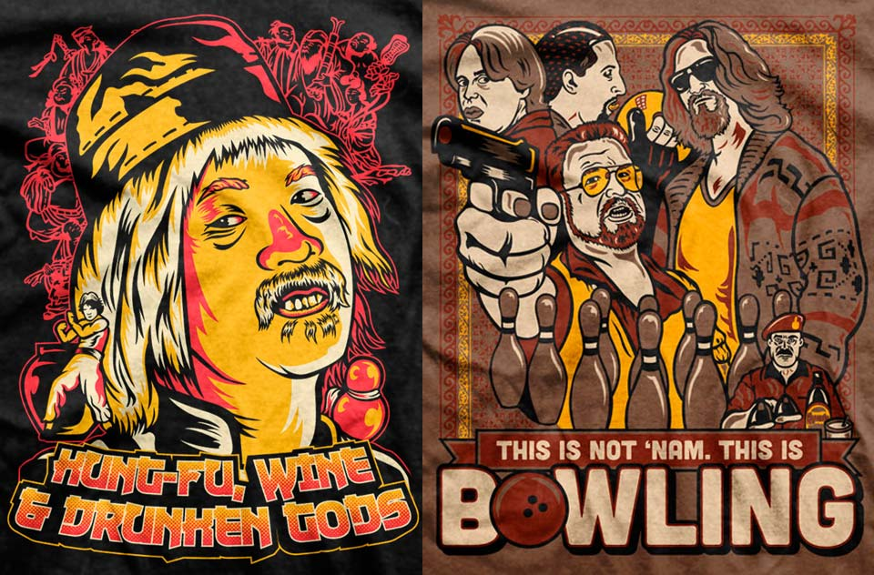
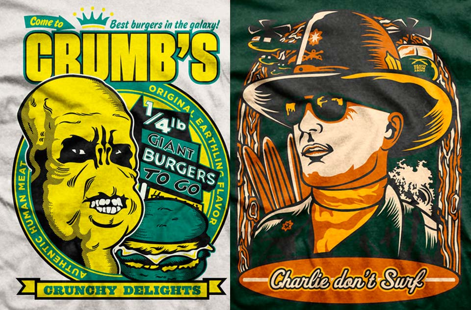
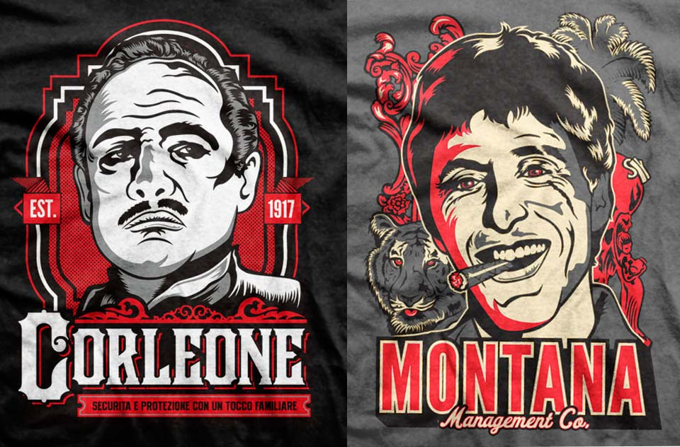

Malgusto T-shirts

I started Malgusto with illustrator Marga Martinez since we couldn't find movie T-shirts that we liked, they were always quickly bad designed t-shirts with the movie name as its main decoy.
Not like everybody else
So to differentiate, we went with big prints, using 3, 4 or even 5 inks and always tried to come up with quality illustrations representing the movie. I learned that a good way to fill the T-shirt and make it feeling harmonic was to think of designs like 'badges' with no frames around.
I worked on lots of designs, came up with the ideas and sketch the composition, after that Marga did the drawings and inked them in Illustrator, and back to my computer, to come up with a colour palette and finalise the art.
What I learned
I learned that you have to be on top of printers for them to meet deadlines, that you have to keep balance between obscure reference for prestige and brand, and more mainstream ones for money. That you can make friends among your clients, and that people recognizes when there's job well done behind something.
